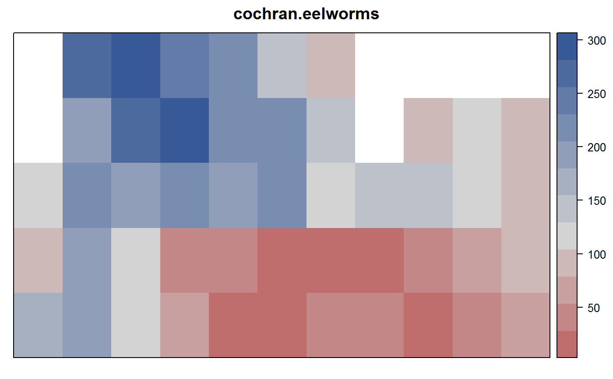
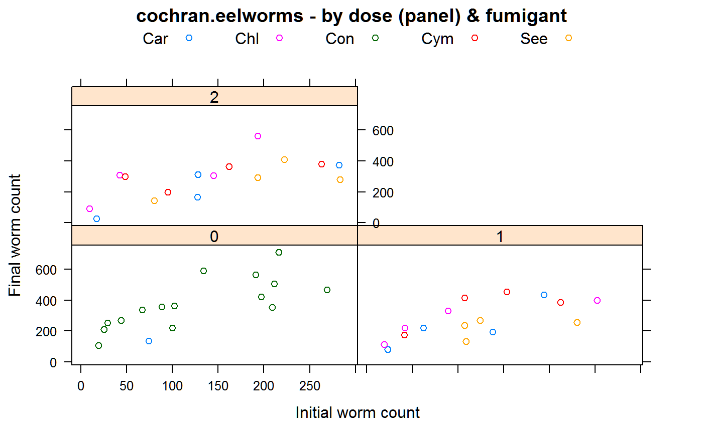

cochran.eelworms.RdCounts of eelworms before and after fumigant treatments
A data frame with 48 observations on the following 7 variables.
blockblock factor, 4 levels
rowrow
colcolumn
fumigantfumigant factor
dosedose, Numeric 0,1,2. Maybe should be a factor?
initialcount of eelworms pre-treatment
finalcount of eelworms post-treatment
In the original experiment plan (as shown in Bailey 2008), columns 9, 10, 11 are shifted up slightly.
Treatment codes: Con = Control, Chl = Chlorodinitrobenzen, Cym = Cymag, Car = Carbon Disulphide jelly, See = Seekay.
Experiment was conducted in 1935 at Rothamsted Experiment Station. In early March 400 grams of soil were sampled and the number of eelworm cysts were counted. Fumigants were added to the soil, oats were sown and later harvested. In October, the plots were again sampled and the final count of cysts recorded.
Cochran and Cox, 1950. Experimental Designs. Table 3.1.
R. A. Bailey, 2008. Design of Comparative Experiments. Cambridge.
library(agridat) data(cochran.eelworms) dat <- cochran.eelworms # Very strong spatial trends libs(desplot) desplot(initial ~ col*row, data=dat, flip=TRUE, # aspect unknown main="cochran.eelworms")# final counts are strongly related to initial counts libs(lattice) xyplot(final~initial|factor(dose), data=dat, group=fumigant, main="cochran.eelworms - by dose (panel) & fumigant", xlab="Initial worm count", ylab="Final worm count", auto.key=list(columns=5))# One approach...log transform, use 'initial' as covariate, create 9 treatments dat <- transform(dat, trt=factor(paste0(fumigant, dose))) m1 <- aov(log(final) ~ block + trt + log(initial), data=dat) anova(m1)#> Analysis of Variance Table #> #> Response: log(final) #> Df Sum Sq Mean Sq F value Pr(>F) #> block 3 5.5727 1.8576 23.5588 1.973e-08 *** #> trt 9 3.4114 0.3790 4.8073 0.000358 *** #> log(initial) 1 5.2603 5.2603 66.7142 1.582e-09 *** #> Residuals 34 2.6808 0.0788 #> --- #> Signif. codes: 0 '***' 0.001 '**' 0.01 '*' 0.05 '.' 0.1 ' ' 1